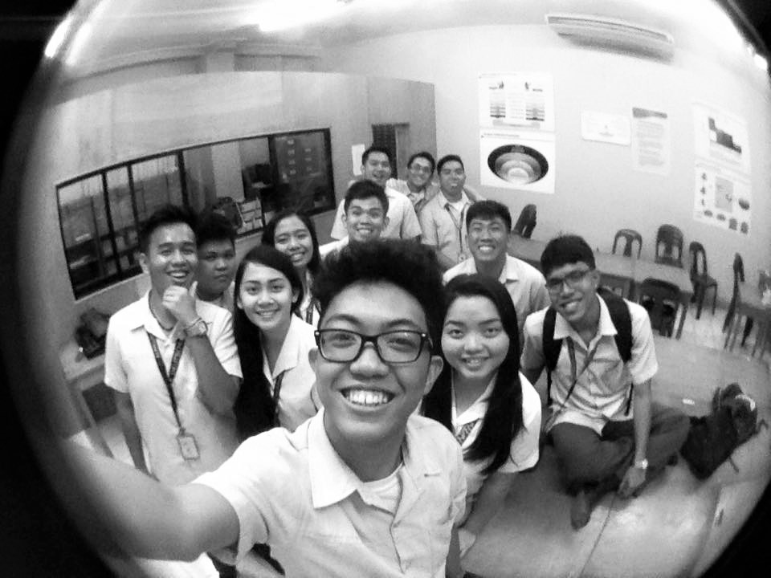

"It is okay to be glowstick. Sometimes we have to break before we shine." -Pinterest
ADJUSTMENT - to describe my entire freshman year. I had a hard time adjusting with my academics and the urban environment. In fact, I was afraid of failing my Trigonometry class because back in high school, we did not discussed the trigonometric identities. I was frustrated and intimidated because I knew that my classmates had this way back in high school. It was not very easy. I exerted additional efforts to have the topic self-reviewed. I had made friends and they became my study and stroll buddies.
HAGGARD - It was on my junior and senior year that started creating A LOT of projects. This marks the start of my stressful life; it really demands time! "Kapoya na oy!" I always tell myself because most of the projects especially under Engr. Nunez requires an IEEE paper report and afterwhich defend it. I even remember running back and forth the corridors of the third floor from room 386 to the faculty room to meet the deadline. The prominent line, "bisag tres lang, okay na" was very prevalent that instant.
THESIS REALLY IS IT - All the stress I experienced from the previous years is not even close to the stress I AM EXPERIENCING right now. All the emotional and physical stress were dominant as of this writing. Many requirements especially in ECE524 that I felt very absurd since we are the pioneering batch that is REQUIRED to have a total of 240 on-the-job training hours. The paperworks of it is what I dislike since it is very hassle on my part to process the papers and at the same time having your OJT. Aside from that we have proposal of our thesis which with God's help, was already approved however it undergone so many revisions.
For nine semesters, I had so many ups and downs. I failed three subjects: Direct current circuits, Electromagnetics 1 and Advanced Mathematics. It was very tough especially when you tell your parents why you failed. Indeed I am the one who is making my grades but there is also the teacher's factor. One can't perform well without the other one. However, these did not hinder me to move on, to move forward. Infact, failing those subjects were my turning point to study hard more.
To all that wants to take up BS ECE, and those who is currently enrolled but is struggling, trust God. Whatever you do, do it your 101 percent. "If it's easy it's not ECE." Yes, this is a challenge, a huge book to carry. You will encounter different failures but remember that these are just test. If you failed, MOVE FORWARD, MOVE ON. Look into the bigger picture. BE OPTIMISTIC. If you are giving up, think the reason why you started. It will remind you.
I am Micah Joshua Agutaya Canaleja, a fifth year Bachelor of Science in Electronics Engineering student of the University of San Carlos-Technological Center. Twenty years of age and presently residing at Block 5, Lot 4, Deca Homes 4, Bangkal, Lapu Lpau City, Philippines. I use my time mostly using social medias such as Facebook, Twitter and Instagram.
13 Oct 2016